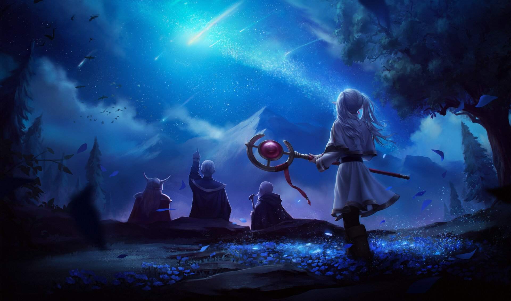

YOUR ANIME, YOUR JOURNEY
Dunia baru. Cerita baru. Versimu.

PILIHAN YORU
葬送のフリーレン
FrierenBeyond Journey’s End
Petualangan tidak berakhir saat sang pahlawan menang.
Temani Frieren menemukan arti waktu dan kenangan.
Katalog otomatis · Trailer tersedia · Episode penuh belum terhubung
01SPOTLIGHT
Artwork: Alpha Coders
Bekal petualanganmu
3 kunci
1
Level 1 • Newcomer0 / 100 XP
Setiap detik menonton, satu langkah lebih jauh.
TEMUKAN CERITA BERIKUTNYA
Populer di kalangan penonton
Memuat katalog anime…
Masih ada cerita yang menunggumu.
Coba judul lain atau ubah filter pencarianmu.